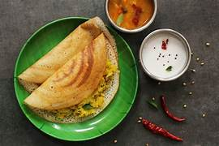
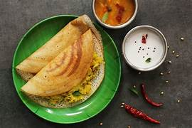

Welcome to JhAnuChandu!
Experience the vibrant flavors of North and South India at JhAnuChandu. Our family recipes, passed down through generations, are prepared with fresh, high-quality ingredients to create a truly authentic dining experience. Whether you're craving the rich curries of the South or the tandoori specialties of the North, we have something to tantalize your taste buds.
We offer a wide variety of vegetarian and chicken dishes, catering to both dietary preferences. We also take pride in our warm and inviting atmosphere, making JhAnuChandu the perfect place for a casual family dinner or a special occasion.
Explore Our Menu 
